PHY-2105 • Coulomb's Law + Electric Field
Write the formula line before substituting, and draw the diagrams that Q2, Q4 and Q6 ask for. Three questions have issues in the sheet itself (Q3 atomic number, Q5 AlCl₂, Q9 which axis) — each is flagged, with the alternative answer, so you can state your assumption.
Every solution: Given → 📐 Formula → numbered Steps → Answer. Blue 🧭 Why? boxes explain directions and signs; red boxes flag problems with the question itself.
Problem: Two charges +16 nC and +9 nC are 50 cm apart. (i) At what point on the line joining them is the electric force zero? (ii) What is the electrostatic force at the midpoint if a positive test charge of +2 nC is placed there?
Coulomb's law — the size of the force. Like charges repel, unlike charges attract.
null point: the two forces on a test charge are equal and opposite
Step 1. Let \(x\) be the distance from the 16 nC charge. Cancel \(kq_0\) from both sides:
Step 2. Take the square root of both sides (no quadratic needed):
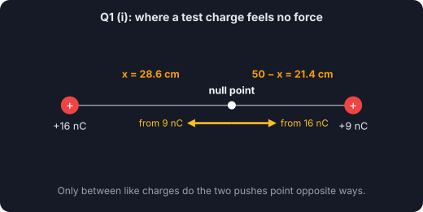
Step 3. Each charge is \(r = 0.25\) m from the midpoint.
Step 4. Net force:
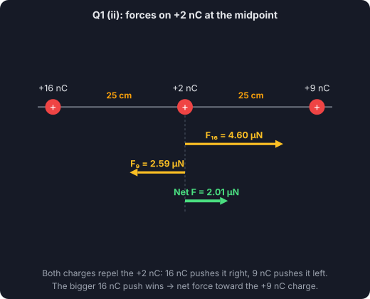
Problem: Charges of magnitude 10 μC are at the corners A, B, C of an equilateral triangle of side 3 m. A and C are negative, B is positive. (i) Magnitude and direction of the total force on B; (ii) draw the force direction diagram; (iii) x- and y-components of the resultant; (iv) express all forces as vectors.
Coulomb's law — the size of the force. Like charges repel, unlike charges attract.
resolve each force into components
magnitude of the resultant
Step 1. Size of each force (same charges, same distance):
Step 2. (ii) Force direction diagram:
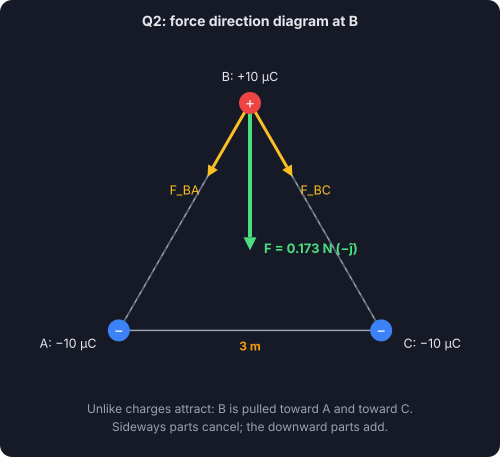
Step 3. (iii) Components (cos 60° = 0.5, sin 60° = 0.866):
Step 4. (i) Resultant:
Step 5. (iv) As vectors:
Problem: What is (i) the Coulomb force between two 4 g pennies 1 m apart if we remove all the electrons from the \(^{23}_{11}\)Mg atoms? (ii) What is their acceleration as they separate?
number of atoms (M = molar mass = 23 g/mol)
charge left after removing all Z electrons from each atom
Coulomb's law — the size of the force. Like charges repel, unlike charges attract.
Newton's second law
Step 1. Atoms in one penny:
Step 2. Remove all 11 electrons from each atom — the penny keeps a charge of +Ze per atom:
Step 3. Force between the two identical pennies:
Step 4. Acceleration (electron mass is negligible, so m stays 0.004 kg):
Problem: \(q_1 = +25\) nC at the origin, \(q_2 = -12\) nC at x = 2 m, \(q_3 = +18\) nC at x = 3 m. What is the net force on \(q_2\), its direction, and draw all the force directions.
Coulomb's law — the size of the force. Like charges repel, unlike charges attract.
all forces lie on one line: take +x as positive
Step 1. Force from q₁:
Step 2. Force from q₃:
Step 3. Net force (+x positive):
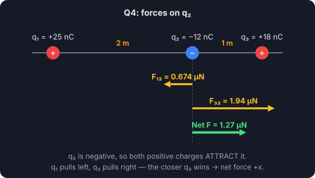
All forces on q₂ (arrows to scale).
Problem: How many charges are available in (i) 1 kg of electrons? (ii) 1 kg of AlCl₂?
number of particles
total charge carried by N elementary charges
moles, then formula units
Step 1.
Step 2.
Step 3. Molar mass and number of formula units:
Step 4. Electrons per formula unit = 13 + 2(17) = 47 (a neutral substance has as many protons):
Problem: \(q_1 = +2q\), \(q_2 = +4q\), \(q_3 = +2q\), \(q_4 = -2q\) at the corners of a square (figure). (i) Draw the arrangement; (ii) find the magnitude and direction of the force on a charge +1q at the intersection of the diagonals, side 10 cm, \(q = 3\times10^{-9}\) C.
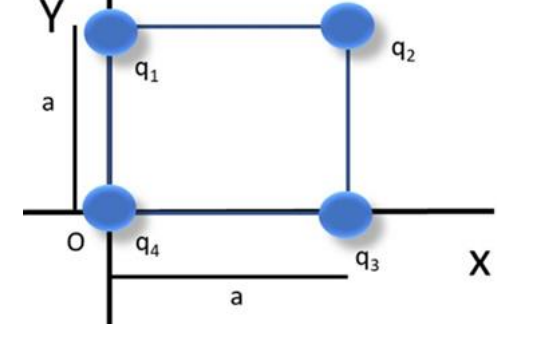
Assignment figure.
Coulomb's law — the size of the force. Like charges repel, unlike charges attract.
corner-to-centre distance
unit force: one q at a corner acting on the +q at the centre
Step 1. Distance and the unit force:
Step 2. So the four forces are 2F₀, 4F₀, 2F₀ and 2F₀. Now the directions:
Step 3. (i) Arrangement and the forces:
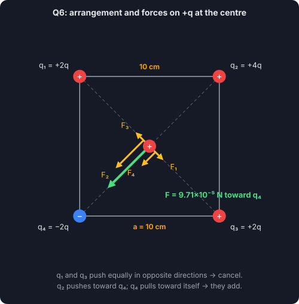
Step 4. Net force, along the diagonal toward q₄:
Step 5. As a vector (the diagonal toward q₄ points at 225°, both components negative):
Problem: −q = −4 C at x = −4 m and q = +4 C at x = +4 m. (i) Magnitude and direction of the net field at P on the y-axis at y = 4 m. (ii) If the −q is changed to +4 C and a +4q charge is placed at O (0, 0), find the net field at P.
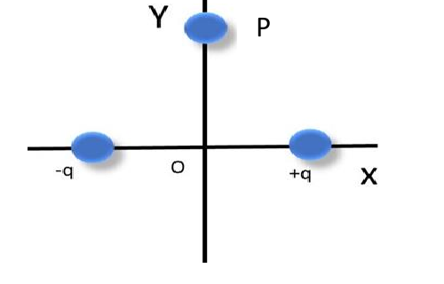
Assignment figure.
field of a point charge — points away from +, toward −
distance from each charge to P
add the fields as vectors (components)
Step 1. Distance and size of each field:
Step 2. Components (cos 45° = 0.707):
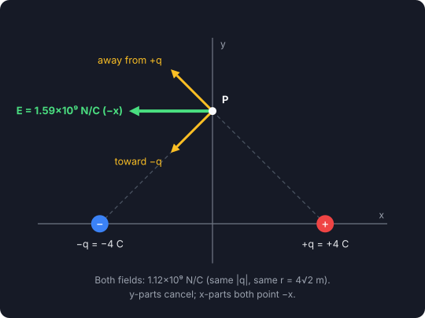
Step 3. Side charges together:
Step 4. Charge at O (r = 4 m):
Step 5. Total:
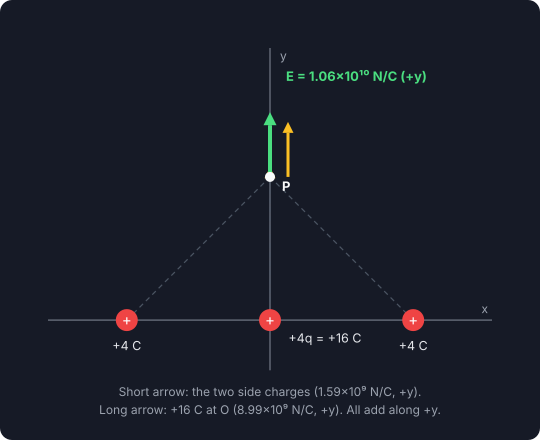
Problem: \(\vec p = (4\hat i + 5\hat j + 7\hat k)\) C·m in \(\vec E = (4000\hat i + 2000\hat j + 3000\hat k)\) N/C. (i) Potential energy; (ii) torque; (iii) work by an agent turning it to \(\vec p = (5\hat i - 10\hat j)\) C·m; (iv) maximum potential energy; (v) work if the dipole rotates from 45° to 90°.
potential energy (dot product)
torque (cross product)
work done by an external agent
magnitude form
Step 1. Write the determinant:
Step 2. Expand (watch the minus sign on the ĵ term):
Problem: An electron on the axis of an electric dipole is 5 nm from its centre. Find the field and the force on the electron if \(p = 5.6\times10^{-15}\) C·m (5 nm ≫ the charge separation).
dipole field far away, on its axis (from the slides)
force on the electron
Step 1. Field:
Step 2. Force:
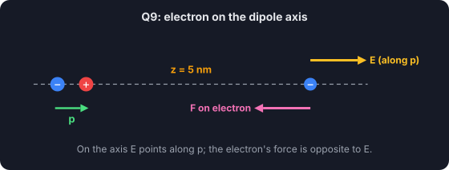
Problem: From the figure, calculate the net electric field at the centre of the shape where a +2.2 μC charge is brought. The electrons are 0.1 cm and the protons 0.6 cm from the centre.
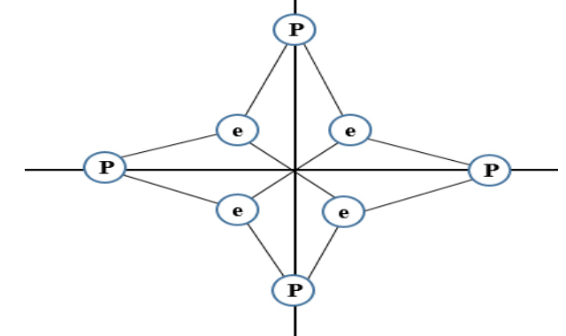
Assignment figure.
field of a point charge — points away from +, toward −
force on the charge brought to the centre
Step 1. Size of each field at the centre:
Step 2. Every field is cancelled by its partner, so: